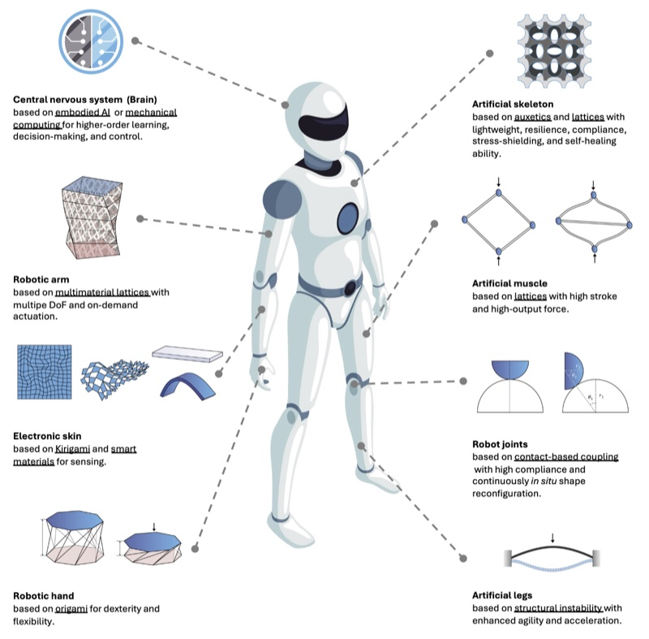

Abstract
Mechanical metamaterials featuring customized microstructures are increasingly shaping robotic design and functionality, enabling the integration of sensing, actuation, control, and computation within the robot body. This Review outlines how metamaterial design principles — mechanics-inspired architectures, shape-reconfigurable structures, and material-driven functionality — enhance adaptability and distributed intelligence in robotics. The authors discuss how artificial intelligence supports metamaterial robotics design and modeling, advancing systems with complex sensory feedback, learning capability, and adaptive physical interactions. The Review aims to inspire the community to explore the transformative potential of metamaterial robotics, fostering innovations that bridge the gap between materials engineering and intelligent robotics.